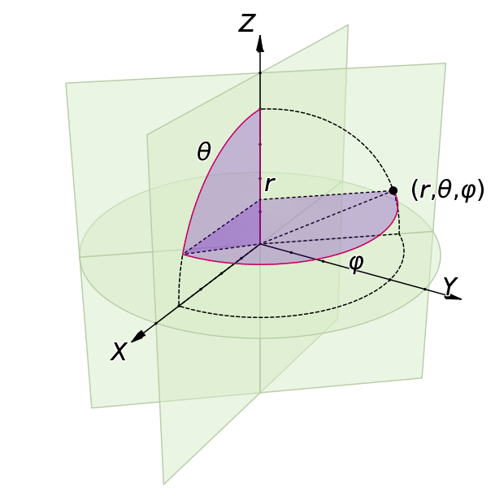

Spherical coordinates#
There are good discussions of spherical coordinates in Wikipedia spherical coordinate system and Mathworld spherical coordinate system.
There is more information in the docstring for the
sphere2cart() function.
Terms#
- Origin
Origin of the sphere
- P
The point represented by spherical coordinates
- OP
The line connecting the origin and P
- radial distance
or radius. The Euclidean length of OP.
- z-axis
The vertical of the sphere. If we consider the sphere as a globe, then the z-axis runs from south to north. This is the zenith direction of the sphere.
- Reference plane
The plane containing the origin and orthogonal to the z-axis (zenith direction)
- y-axis
The horizontal axis of the sphere, orthogonal to the z-axis, on the reference plane. West to east for a globe.
- x-axis
Axis orthogonal to y and z-axis, on the reference plane. For a globe, this will be a line from behind the globe through the origin towards us, the viewer.
- Inclination angle
The angle between the OP and the z-axis. This can also be called the polar angle, or the co-latitude.
- Azimuth angle
or azimuthal angle or longitude. The angle between the projection of OP onto the reference plane and the x-axis
The physics convention#
The radius is \(r\), the inclination angle is \(\theta\) and the azimuth angle is \(\phi\). Spherical coordinates are specified by the tuple of \((r, \theta, \phi)\) in that order.
Here is a good illustration we made from the scripts kindly provided by Jorge Stolfi on Wikipedia.
The formulae relating Cartesian coordinates \((x, y, z)\) to \(r, \theta, \phi\) are:
and from \((r, \theta, \phi)\) to \((x, y, z)\):
The mathematics convention#
See the Wikipedia spherical coordinate system. The mathematics convention reverses the meaning of \(\theta\) and \(\phi\) so that \(\theta\) refers to the azimuthal angle and \(\phi\) refers to the inclination angle.
Matlab convention#
Matlab has functions sph2cart and cart2sph. These use the terms
theta and phi, but with a different meaning again from the standard
physics and mathematics conventions. Here theta is the azimuth angle, as
for the mathematics convention, but phi is the angle between the reference
plane and OP. This implies different formulae for the conversions between
Cartesian and spherical coordinates that are easy to derive.